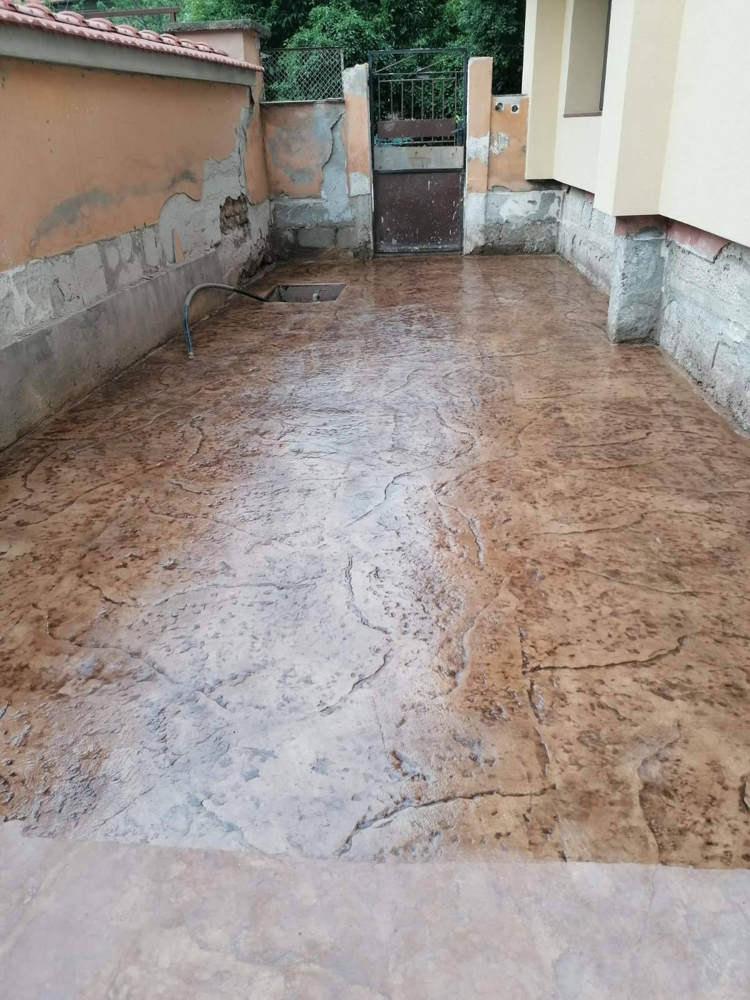
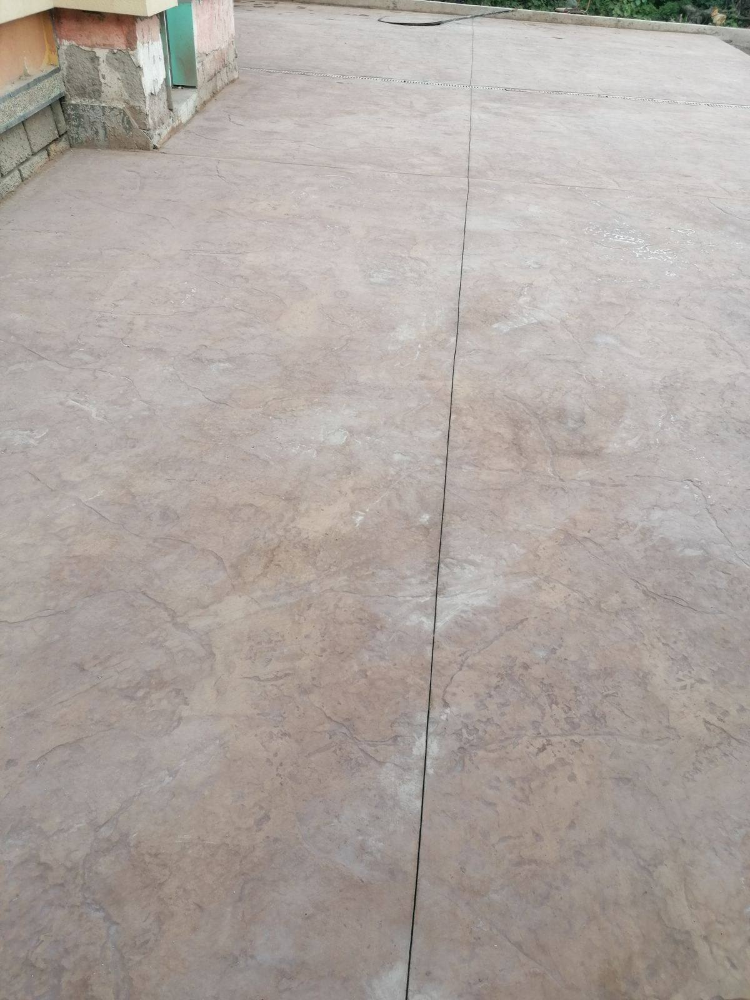
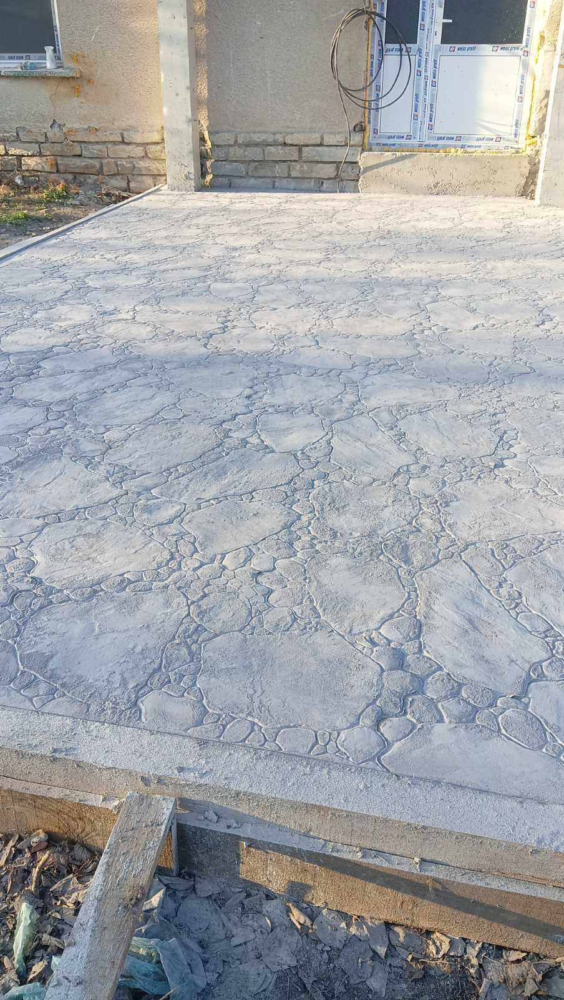
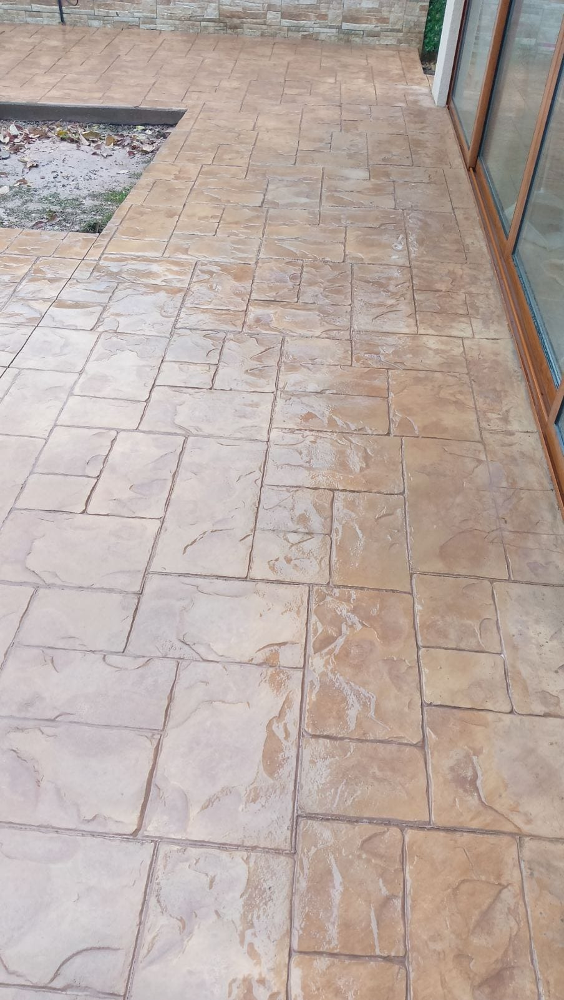

Заливна бетонна настилка
Заливната бетонна настилка е модерно решение за декоративни подови настилки, което комбинира естетика и функционалност. Предлагаме разнообразие от текстури, цветове и дизайни, които могат да имитират естествени материали като камък, плоча, дърво и други.
Предимства на заливната бетонна настилка:
- Изключителна издръжливост и дълъг живот
- Лесно поддържане и почистване
- Устойчивост на атмосферни влияния
- Разнообразие от дизайни и цветове
- Икономично решение за големи площи
Приложения:
- Външни алеи и пътеки
- Автомобилни паркоместа
- Входове на сгради
- Градини и паркове
Използваме само висококачествени материали и съвременни технологии за изработване на заливната бетонна настилка. Всеки проект е уникален и се изпълнява според индивидуалните изисквания на клиента.




Интересува ви тази услуга?
Свържете се с нас за безплатна консултация и персонализирано предложение.
Запитване